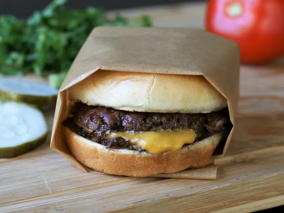

Homemade Smash Burgers

Burgers were meant to be smashed
A Kentucky staple, the smash burger is known across the country for it's crispy edges and juicy interior.
For this recipe you're going to want some cold, fatty beef and don't leave them alone because we're using high heat to cook these delicious burgers.
Ingredients
- 4 hambuger buns
- 2 tbsp butter, softened, or as needed
- 1lb ground chuck beef (80% lean)
- 4 6-inch squares parchment paper
- salt to taste
- 4 slices American cheese
- burger toppings of choice
Directions
- Preheat your lightly oiled grill/cast iron skillet until smoking.
- Spread butter on buns and toast. Set aside.
- Form meat into 2oz, loosely packed, balls. Place a ball on the grill/skillet, along with a piece of parchment paper to prevent the spatula from sticking. Immediately smash it into a thin round patty. Salt your meat at this stage.
- Grill until the edges are dark brown and the center is a light pink color. Then flip the burger and put a slice of cheese on top. Grill unil cheese is melted, then you can assemble your burger.